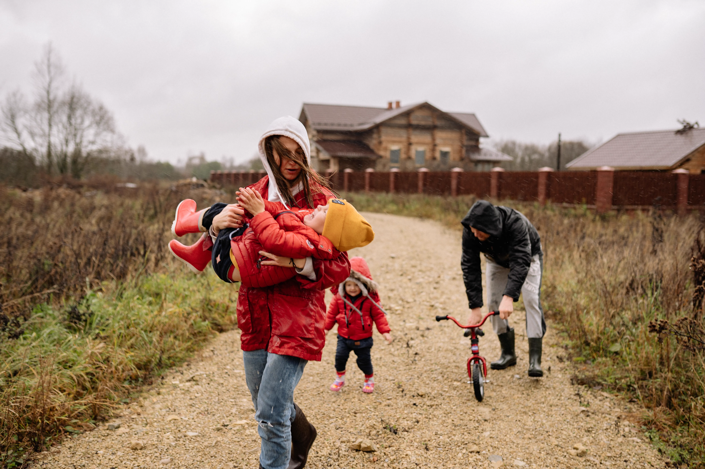

Food for Thought
Risks
Risks of Food Insecurity
Food insecurities is not without its risks. While every person has their own life, circumstances and each situation is different, patterns are often shown with people who need food assistance such as WIC. Carmen Byker Shanks a researcher at the Center for Nutrition and health impact, found families struggling with food insecurities also may commonly share experiences challenges that are into always taken into an account. The USDA identifies risk factors associated with food insecurities (Hodges et al., 2024)
-
Categorical
- Pregnant women and children up to their 5th birthday
-
Residential
- Unstable housing, low-income housing
-
Income
- Under 185% of the poverty line
-
Nutritional Risk
- Failure to thrive, lead exposure, dietary risks
While these risks may be considered tradtional categoires, thier defintions are not always what they seem. An example is unlike other programs like SNAP, whitch uses groos income for checking finaceal situations WIC uses Net income to assess food insecurity. WHat is propose to the WIC program is a more Open and more compreseive risk-assessment system: that takes into account, gross income, debt, a history of debt, housing insecuirty, and other factors that can effect a families abilty to afford food. This would allow a wider range of circumstances to be considered when assessing food insecurity, and provide a wider amount of detail into account when determing a familys level of need.